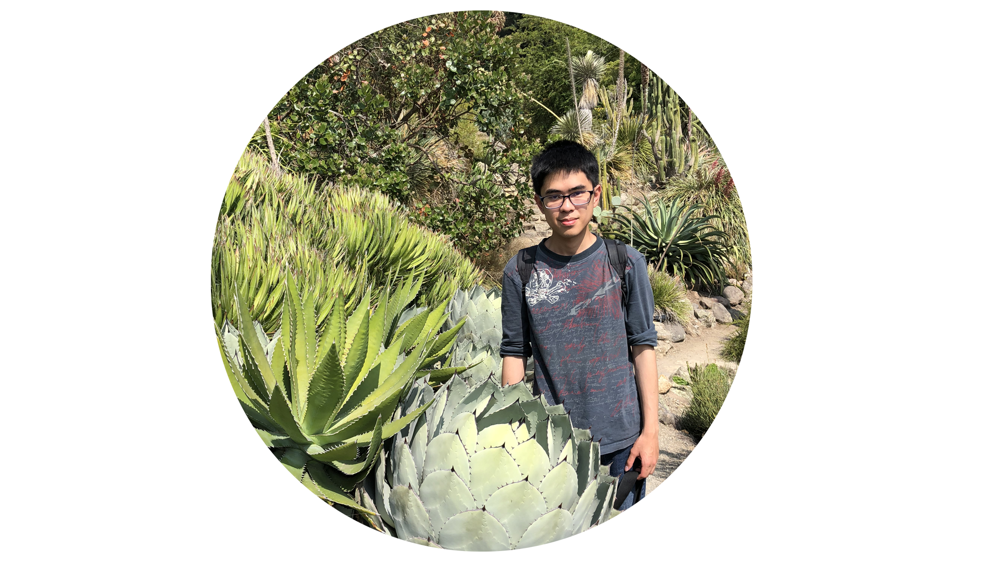

|
網頁設計師 Johnny網頁工程師, 軟件工程師, Java 工程師 |
 |
About meHello, 我是翁正洋， 今年25歲，來自台北市信義， 出生1996-03-04，我是一個熱愛學習，負責任而且凡事力求完美的男生。在眾多的與他人合作經歷中，我擁有爽快性格，也容易和他人相處。 我2020年畢業於美國舊金山藝術大學，專攻動畫與視覺藝術。旅居美國6年使我養成獨立思考，以及解決問題的能力。在美國求學時光，使我精通英語技能， 聽說讀寫能力，並且一邊讀書一邊工作，習慣於長時間工作, 使自己能在龐大壓力下也能保持專業水準。在國外充實的求學生崖中，我不斷追求專業能力上的提升，並在留學生崖中留下寶貴的回憶。 我本身專攻藝術及三維人物動畫，曾在巨匠電腦學習並且在2021年考取 1z0 808, Java SE 8 Programmer I 和1z0 809, Java SE 8 Programmer II。在這個學習程式的過程中逐漸對程式產生濃厚的興趣。希望能找到 Java工程師的工作, 與公司一起成長。 我做過各式各樣的工作，接受各種專業訓練，也培養了不同軟硬實力，在餐廳工作，學會如何與同事相處和與客人間的溝通技巧，在做行政助理時，增強了我使用 word 和excel 來處理資料 |
|
|
Weng, Jeng Yang, animator, studies at Academy of Art University. He has begun working on 3D animation since 2017. As time passed he became increasingly interested in story-boarding. He has been studying at AAU for about 2 years. He sees the potential of 3D animation, especially applying to design and movies. In addition, he is interested in the combination of technology and 3D graphic design, making the animation more realistic and easily produce. He is versed in animation production software, such as Maya, Photoshop, After effect. He has passion for making fabulous environment and the interaction between characters. Inspired by Japanese animation, he wants to create really cool scenes for audience, however, he then sees the potential way of making 3D animation in the U.S. His goal is to create good film as being a creative member in the big animation company, such as Disney, Pixar, or Dreamworks. He is good at using his imagination to create a vivid interaction between characters. After watching Disney’s animation, such as Zootopia and Frozen, he believes that making a good 3D animation is to combine with art and technology |